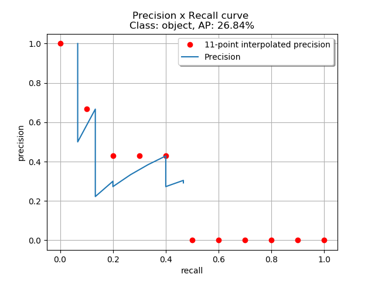

在分类模型的评价标准中，PR曲线和ROC曲线被广泛应用于模型的性能评估。本文对PR曲线和ROC曲线及其相关的性能指标AUC, EER, AP, mAP, F1-measure进行介绍。
混淆矩阵 Confusion Matrix
| Truth | $\sum$ | |||
|---|---|---|---|---|
| 1 | 0 | |||
| Estimate | 1 | TP | FP | TP+FP |
| 0 | FN | TN | FN+TN | |
| $\sum$ | TP+FN | FP+TN | TP+TN+FP+FN | |
- 真正例 (True Positive, TP): 预测值和真实值都为1
- 假正例 (False Positive, FP): 预测值为1，真实值都为0
- 真反例 (True Negative, TN): 预测值和真实值都为0
- 假反例 (False Negative, FN): 预测值为0，真实值都为1
由这四个指标衍生出的指标：
- 查准率/准确率: $ \text{Precision} = \frac{TP}{TP+FP} $
- 查全率/召回率: $\text{Recall} = \frac{TP}{TP+FN}$
- 真阳率(True Positive Rate): $\text{TPR} = \frac{TP}{TP+FN}$
- 假阳率(False Positive Rate): $\text{FPR} = \frac{FP}{FP+TN}$
ROC曲线
ROC定义
ROC曲线(Receiver Operating Characteristic Curve, 受试者工作特征曲线)是比较分类模型好坏的可视化工具。
以FPR为x轴，TPR为y轴绘制图。如下图所示。
ROC曲线的衍生指标
- EER(equal error rate): TPR=FPR时的值。
- AUC(area under curve): ROC曲线下的面积
PR曲线
PR定义
PR曲线中P是Precision, R是Recall。
以Recall为x轴，Precision为y轴。

- 假设一次Object Detection的结果为：（对于目标检测任务，当预测框与真实框IoU大于一定阈值时标记为TP；当预测框与真实框IoU小于一定阈值时标记为FP；一个真实框没有一个任何预测框与其重叠的为FN）


- 对其confidence进行排序:

- 根据上表的顺序绘制PR曲线：
至此我们得到了一张PR图。
PR图的衍生指标
- AP (Average Precision)
- mAP (mean Average Precision)
- F1-measure 综合评价指标
下面给出AP, mAP和F-measure的计算方法
计算AP
AP 是针对某一类别进行计算的。
下面我们先从图的角度来理解AP。
在2010年前，AP的计算方法是用11点插值法(11-point interpolation)：
分别取 recall = [0.0, 0.1, 0.2, 0.3, 0.4, 0.5, 0.6, 0.7, 0.8, 0.9, 1.0] 十一个点插值，对每一个插值recall取 recall’ >= recall 的点中precision最大的值作为该插值recall对应的precision。
计算公式为: $$ P_{\text{interpolation}} (r) = \max_{r’ \ge r}\left(P(r’)\right) $$

计算这11个插值recall对应precision的均值即是AP。
$$
\begin{align}
AP &= \frac1{11} \sum_{r \in \{0,0.1,…,1\}} P_{\text{interpolation}} (r) \\
&= \frac1{11} \left( 1 + 0.6666 + 0.4285 + 0.4285 + 0.4285 + 0 + 0 + 0 + 0 + 0 + 0 \right) \\
&= 26.84\%
\end{align}
$$
2010年后，AP的计算方法不再使用11点插值法，而是考虑所有的点:
对所有Recall值，将Recall大于等于该Recall值的所有点中的最大precision作为该recall值对应的precision。公式仍是 $$ P_{\text{interpolation}} (r) = \max_{r’ \ge r}\left(P(r’)\right) $$ 不同点在于AP的计算公式: $$ AP = \int_0^1 P_{\text{interpolation}}(r) \, dr $$ 可以画出图帮助理解：


按照上面的计算公式，则AP为：
$$
\begin{align}
A1 &= (0.0666 - 0) \times 1 = 0.0666 \\
A2 &= (0.1333-0.0666) \times 0.6666 = 0.04446222 \\
A3 &= (0.4-0.1333) \times 0.4285 = 0.11428095 \\
A4 &= (0.4666 - 0.4) \times 0.3043 = 0.02026638 \\
\\
AP &= A1+A2+A3+A4 \\
&= 0.0666 + 0.04446222 + 0.11428095 + 0.02026638 \\
&= 0.24560955 \\
&= 24.56\%
\end{align}
$$
以后的AP计算我会以2010年后的版本为准。
接下来我将演示用表格来计算AP，而不使用绘图的方式：
按Confidence置信度来降序做出表格:
| Detection | Precision | Recall | Max Precision for Any Recall $r' \ge r$ | Average Precision |
|---|---|---|---|---|
| R | 1 | 0.0666 | 1 | 24.56% |
| Y | 0.5 | |||
| J | 0.6666 | 0.1333 | 0.6666 | |
| A | 0.5 | |||
| U | 0.4 | |||
| C | 0.3333 | |||
| M | 0.2857 | |||
| F | 0.25 | |||
| D | 0.2222 | |||
| B | 0.3 | 0.2 | 0.4285 | |
| H | 0.2727 | |||
| P | 0.3333 | 0.2666 | ||
| E | 0.3846 | 0.3333 | ||
| X | 0.4285 | 0.4 | ||
| N | 0.4 | |||
| T | 0.375 | |||
| K | 0.3529 | |||
| Q | 0.3333 | |||
| V | 0.3157 | |||
| I | 0.3 | |||
| L | 0.2857 | |||
| S | 0.2727 | |||
| G | 0.3043 | 0.4666 | 0.3043 | |
| O | 0.2916 |
计算方法和原理同上，但画出表格可以直接计算AP:
$$
\begin{align}
AP &= 1 \times 0.0666 + 0.6666 \times (0.1333-0.0666) + 0.4285 \times(0.4-0.1333) + 0.3043 \times(0.4666 - 0.4) \\
&= 0.24560955
\end{align}
$$
计算mAP
mAP的全程是mean Average Precision，即是所有AP的均值。因为AP只是正对一类的准确率进行评估，而在多类别检测/分类任务中就需要一个指标来对整个多分类任务的性能进行评估，这就是mAP。
计算公式: $$ mAP = \frac{\sum_c AP_c}{N_{class}} $$
计算F1-measure综合评价指标
F-measure又称F-Score，是Precision和Recall的加权调和平均，常用于评价分类模型的好坏。
计算公式: $$ F_\alpha = \frac{(\alpha^2+1)\text{Precision}\times\text{Recall}}{\alpha^2 \text{Precision} + \text{Recall}} $$
常见的F$_1$-measure即为F-measure中$\alpha=1$的特例: $$ F_1 = \frac{2 \times \text{Precision}\times\text{Recall}}{\text{Precision} + \text{Recall}} $$
该公式的另外一种形式可以帮助记忆: $$ \frac2{F_1} = \frac1{\text{Precision}} + \frac1{\text{Recall}} $$
参考资料
[1] rafaelpadilla/Object-Detection-Metrics
[2] 目标检测中的mAP是什么含义?